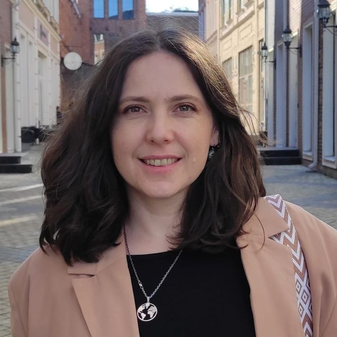

Надежда Савченко
C#, .NET менторство | Менторство для тимлидов | Резюме | Собеседования
Привет, я Надя, в айти с 2007 года.
Пиши если нужна помощь ментора по C#, .Net, тимлидству -
http://t.me/aiaka21

Обо мне:
- В основном работаю в стэке .Net, C#
- Большой опыт в MSSQL, Azure
- Сотрудничала с заказчиками из Великобритании и Израиля
- Была тим лидом в нескольких командах
Основные Направления
- C#, .Net - начинающий специалист, Junior - вкатиться, стать разработчиком, продвинуться на уровень Middle. Поддержка для уже работающих на позиции Junior, Middle.
- Мок-собеседования на английском.
- Team Lead, управление командой - помощь тимлидам, а также тем, кто хотел бы перейти на эту позицию, и тем, кто хочет разобраться в процессе управления командой.